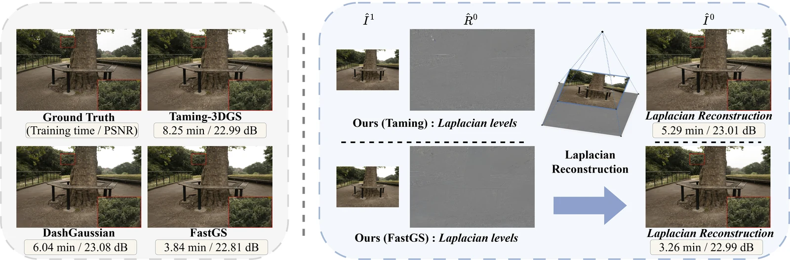

Soren Zhang
Sisheng Zhang
I am an undergraduate at Harbin Institute of Technology, Shenzhen. My research interests include 3D vision, rendering, computer vision, and deep learning.
Publications
Research Interests
- 3D vision and novel view synthesis
- Efficient rendering and scene representation
- Computer vision and deep learning
Education
Harbin Institute of Technology, Shenzhen
Undergraduate student · 2023–present